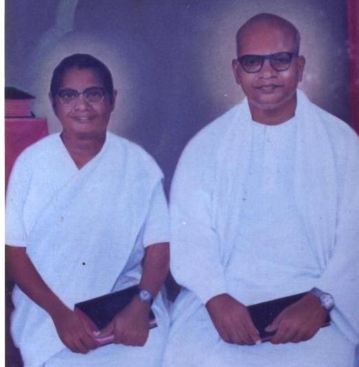

Founded in Kerala


Worship & Music
Celestial Rhythm Band
Listen to worship from the WME music ministry. Tap a video to play.


An indigenous full-gospel ministry since 1947. We preach Christ crucified, plant churches, train disciples, and reach unreached people across India.

Since 1947World Mission Evangelism Ministries (WME Church of God) is an indigenous Christian faith ministry in India, originally known as the Independent Church of God. It stands as a prominent full-gospel church in the mainstream of India’s historical Pentecostal Christianity.
The late Pastor C. S. Mathew — Bible preacher, theologian, hymn writer, revivalist and pioneer apostle of the Indian church — founded the ministry in 1947 in Kerala. He and his wife Aleyamma passed through unimaginable tests of faith. They were blessed with 11 children, but eight died while young. The small ministry birthed in Kerala grew across the nation. God also used him to write 300 revival songs in Malayalam. Pastor Mathew and Aleyamma finished their race and went to be with the Lord in 1985.
Formed in the sweeping Pentecostal revival of the early 20th century, WME grew into different states of India. Kariamplave, the village where the ministry began, became the national centre. The annual Kariamplave Convention grew into one of the largest Christian conventions in India.
Founded in Kerala
Revival songs in Malayalam
Kariamplave Convention
“To make disciples of all nations” is our Lord’s mandate. We preach the gospel and work to plunder hell and populate heaven.
WME is committed to church planting, children’s ministry, Bible training, charity, missionary sending, literature, music, and mercy ministries — often in the most difficult and unreached regions.
WME churches across India share Christ’s love with tribes and unreached villages. You are welcome to support a missionary — each soul won will bring reward.
Sunday School and Youth Fellowship care for abandoned, orphaned and vulnerable children, raising them as better citizens in Christ.
Faith Bible Schools in Telugu, Tamil, Oriya and Malayalam. WME Bible College in Kariamplave is one of the oldest training centres in India.
The historic Kariamplave Convention and village crusades that spark revival across the nation.
Leadership gatherings that equip pastors and workers for the harvest.
Youth Fellowship raising a generation of Spirit-filled witnesses.
Women of the church serving, teaching, and leading in the gospel.
Mercy work that protects, provides, and sustains people in faith. We are committed to faithful stewardship of every gift.
Pastor O. M. Rajukutty took over as President of WME Ministries following the home going of Rev. C. S. Mathew. He earned M.A. degrees in English literature and History from the University of Kerala, and theological education in Kerala, Delhi and the United States. He earned his Th.D. from the North Carolina College of Theology.
He was ordained on 25 January 1981 by Rev. C. S. Mathew, Godi Samuel and Dr. Samuel Kim. He served on the National Executive of WME from 1979–1985 and as Overseer from 1985–2004. He is currently General President and Chairman of W.M.E Ministries — an international Bible preacher, professor of Biblical eschatology, Bible school principal, Radio-TV speaker, hymn writer, and General Secretary for the Pentecostal Inter Church Council. His vision is to blossom WME into an international ministry. His wife Susan is a well-known preacher, woman leader and hymn writer.
Creator and Lord of the universe, eternally existent in three persons: the Father, the Son, and the Holy Spirit.
The sixty-six books of the Old and New Testaments are the inspired Word of God, the infallible rule of faith and conduct, wholly true and trustworthy.
We believe in His deity, virgin birth, sinless life, vicarious sufferings, atoning death, bodily resurrection, ascension, intercession, imminent return, millennial reign, and White Throne Judgment.
Man was created in God’s image but fell by voluntary transgression. Redemption is by repentance and faith in Jesus Christ and regeneration by the Holy Spirit.
By His indwelling presence the Christian is enabled to live a sanctified life of righteousness and holiness, the outward evidence of inward grace.
We believe in the resurrection of the saved unto eternal life and of the impenitent unto eternal judgment.
Adult water baptism by immersion in the name of the Father, the Son and the Holy Spirit, identifying the believer with Christ in His death and resurrection.
The Lord’s Supper, assembly on the first day of the week according to apostolic practice, and divine healing as a provision of the atonement.
The baptism of the Holy Spirit with the initial signs of speaking in tongues and spiritual gifts following.
The spiritual unity of all believers in Jesus Christ. The Church is the living Body of Christ with a divine appointment for the Great Commission.
There is one holy, universal and apostolic church, which is the Body of Christ to which all true believers belong.
Listen to worship from the WME music ministry. Tap a video to play.
We would love to pray with you, welcome you to Kariamplave, or share how you can partner with the ministry.